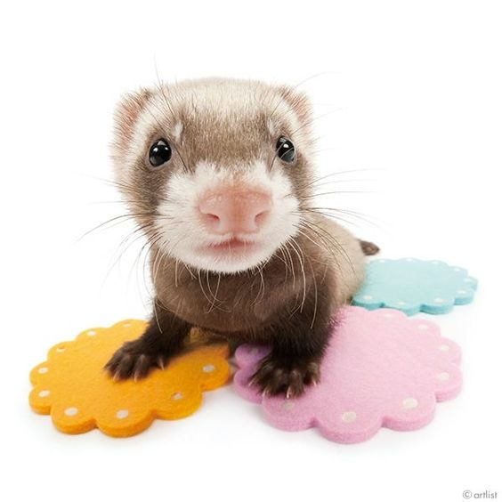

El hurón (Mustela putorius furo) es una subespecie del turón. Fue domesticado hace al menos dos mil quinientos años para cazar conejos. Mide unos 38 cm y pesa entre 0,7 y 2,3 kg.

Los primeros hallazgos arqueológicos de hurones datan del 1500 a.c. Aunque no se sabe a ciencia cierta cuándo empezó a ser domesticado. Se cree que la domesticación fue similar a la del gato. Hay quien dice que los antiguos egipcios tenían hurones, pero es más creíble que los europeos que visitaban Egipto viesen gatos, y pensaran que usar un pequeño carnívoro para proteger las reservas de grano era una gran idea. Al no haberse encontrado hurones momificados ni jeroglíficos que los representen, esta teoría tiene poco fundamento.
EHacia el año 6 a. C., el emperador César Augusto envió hurones o mangostas (denominadas viverrae por Plinio el Viejo) a las islas Baleares para controlar las plagas de conejos.
El hurón desciende probablemente del turón (Mustela putorius), por lo que el nombre científico más utilizado para este animal es Mustela putorius furo. También es posible que los hurones tengan como antepasados al turón de la estepa (Mustela eversmannii).
Durante cientos de años el principal uso de los hurones fue la caza de lagomorfos (conejos). Con su cuerpo largo y estilizado, están bien adaptados para entrar en madrigueras y cazar a los animales que haya dentro. Aún se usan para cazar en algunos países, sobre todo en Australia donde los conejos son una plaga y, a pesar de la tecnología moderna, la combinación de unas cuantas redes y un par de hurones resulta muy eficaz.
En España, el uso de hurones para la caza está regulado en cada comunidad autónoma aunque la mayoría, como por ejemplo las islas Baleares, prohíben su uso por ley. Otras comunidades, pese a prohibir la caza con hurones, permiten hacerlo si se consigue un permiso de la Consejería debido a que se reconozca que existe una plaga de conejos.
Los hurones son animales más parecidos al perro que al gato, sobre todo a nivel veterinario. En España, requieren tener obligatoriamente pasaporte con chip y vacunas en regla, incluso (aunque no en todas las comunidades) es necesario vacunarlos contra la rabia. Son enérgicos, curiosos y les gusta jugar con sus dueños. Dicen que los humanos domesticaron hurones por la curiosidad que despertaban; sea esto cierto o no, su curiosidad es superior a su instinto y esto hace que sus posibilidades de supervivencia en nuestro entorno sean bastante limitadas.
Los hurones son la tercera mascota más frecuente en Estados Unidos después de los perros y gatos, aunque saben cómo convivir con ellos y adaptarse a las reglas del hogar. En proporción, los hurones causan muchos menos daños que los perros o gatos.
l alimento ideal del hurón contiene un 32–38% de proteínas y un 15–20% de grasas (el origen de las proteínas del alimento del hurón debe proceder siempre de carne, no de soja o plantas similares). Aunque un alto contenido proteico es esencial, si este es mayor del 38 % puede generar ocasionales cálculos renales y obstrucciones urinarias en los hurones más viejos. Las pasas y la malta no están recomendados para hurones pues incluso una cantidad pequeña de azúcar puede ocasionar anomalías en el funcionamiento del páncreas, donde se produce la insulina. Los productos vegetales no aportan nada a los hurones que al ser carnívoros estrictos tienen el intestino muy corto y esto impide la asimilación de las proteínas vegetales.
Los niños pequeños deben ser vigilados cuando se encuentran con hurones, ya que a menudo piensan que es un simple animal de peluche que pueden estrujar cuanto quieran, sin darse cuenta de que en realidad lo están estrangulando. El animal suele reaccionar retorciéndose, arañando, o cuando ya está totalmente desesperado, mordiendo con fuerza. No tiene por qué haber nada malo en que un niño juegue con un hurón, siempre y cuando exista un control por parte de adultos, como en el caso de cualquier otro animal.
En el Reino Unido, los hurones se usan a veces para capturar las ratas y ratones que infestan las casas. Estos "hurones cazadores" de roedores se conocen como hurones galgo debido a su menor tamaño y capacidad para desplazarse rápidamente por espacios estrechos. Algunos dueños de "hurones cazadores" entrenan a sus animales para que sean muy agresivos; por tanto, un niño que haya tenido un contacto previo con unos domésticos puede correr peligro cuando se encuentra con uno criado de forma no doméstica o simplemente irresponsable, como ocurre con cualquier otro animal.